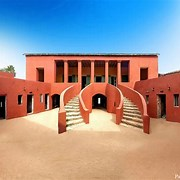

Histoire
La Maison des Esclaves, construite vers 1776, est le bâtiment le plus emblématique de l'île.
- Elle abritait des chambres exiguës où les esclaves étaient enfermés, triés et préparés pour leur départ.
- La célèbre Porte du Non-Retour donne sur l'océan Atlantique, symbolisant le départ définitif des esclaves vers les Amériques.
- Elle est aujourd'hui un musée et un lieu de mémoire, visitée par des figures mondiales comme Nelson Mandela, Barack Obama et le Pape Jean-Paul II.
